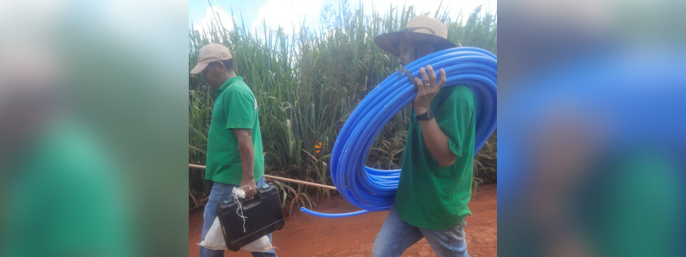
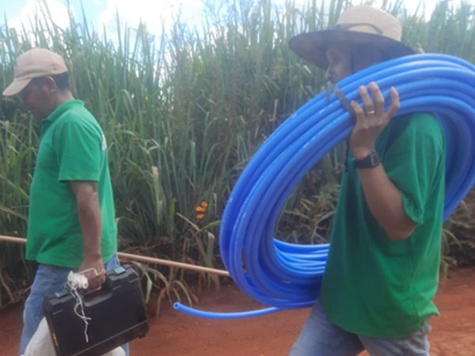

Módulo 4 | Aula 2 Saúde, Bem viver e Sistemas Médicos - o desafio de garantir a atenção diferenciada
Tópico 4
Atenção Diferenciada
Um princípio da Política Nacional de Atenção à Saúde dos Povos Indígenas é a Atenção diferenciada.
A proposta da atenção diferenciada está no centro das diretrizes do SasiSUS e se refere à necessidade da atenção à saúde acontecer de forma diferenciada, isto é, alcançando os territórios indígenas e levando em consideração as especificidades culturais e epidemiológicas desses povos.
Especificidades culturais
Especificidades culturais
Se relacionam com práticas e saberes específicos de cada povo.
Especificidades epidemiológicas
Especificidades epidemiológicas
Dizem respeito ao perfil epidemiológico da população, à carga de doença da comunidade, ou seja, conhecer quais são as doenças mais prevalentes na população, quais os grupos mais acometidos, quais os mais vulneráveis.
Sabe-se que os povos indígenas, em geral, têm piores indicadores de saúde quando comparados à população não indígena. Isso se deve às condições de vida desfavoráveis, como falta de acesso à água de qualidade, saneamento, e mudanças socioeconômicas e ambientais associadas ao processo de colonização, que provocaram mudanças nas estratégias de subsistência e perda de soberania alimentar de muitos grupos indígenas.
As desigualdades em saúde são consequências da colonização e de um modelo de sociedade marcado pela exploração do meio ambiente, dos animais e dos seres humanos.
Quando as desigualdades em saúde são evitáveis, ou seja, são provocadas por injustiças sociais ou pela falta de políticas públicas, elas são chamadas de iniquidades em saúde.
Alguns exemplos das desigualdades em saúde que afetam os povos indígenas no Brasil são que crianças indígenas morrem mais que crianças brancas; doenças como diabetes, tuberculose, malária, entre outras, afetam mais os indígenas do que os não indígenas; em algumas regiões, a mortalidade materna entre indígenas é maior do que entre as mulheres não indígenas. Além disso, o racismo e o preconceito estão historicamente presentes no dia a dia das pessoas e também nos serviços de saúde.
As desigualdades em saúde estão tanto nas dificuldades encontradas para acessar os serviços de saúde, como nas condições de saúde e de saneamento que diferenciam os grupos sociais.
Diante dessa situação e da emergência de novas doenças advindas do contato dos indígenas com os não indígenas, o movimento indígena se mobilizou para buscar o acesso aos serviços de saúde biomédicos em seus territórios.
E assim, foi criado o Subsistema de Atenção à Saúde Indígena (SasiSUS), que se configura em uma rede de serviços que passa a atuar nos territórios indígenas e a ligar esses territórios com os hospitais nas cidades.
Tanto o SasiSUS quanto a atenção diferenciada surgiram com o objetivo de diminuir as desigualdades de saúde e de acesso aos serviços de saúde.
Essa rede do SasiSUS segue do Polo base até as Casas de Saúde Indígena e, por fim, alcança os hospitais e clínicas nas cidades. A participação do movimento indígena nas Conferências de Saúde dos Povos Indígenas foi central para a construção do atual modelo que existe hoje e, principalmente, para definir algumas diretrizes que devem orientar os gestores e os profissionais de saúde quando forem atuar junto aos povos indígenas.
O SasiSUS é regulamentado de acordo com a Política Nacional de Atenção à Saúde dos Povos Indígenas (PNASPI).
Segundo essa Política, os gestores e profissionais de saúde devem atuar respeitando as formas de viver e os olhares sobre o adoecimento e a saúde que os indígenas também têm construído ao longo dos tempos. Essa é uma importante diretriz da atenção diferenciada.
Assim, espera-se ter profissionais de saúde que respeitem os povos indígenas e que se abram para o diálogo interétnico.
Se faz necessário ter uma gestão que leve as tecnologias de saúde aos territórios, promovendo a saúde por meio da oferta de serviços biomédicos e por meio da articulação entre os saberes da biomedicina com os saberes dos povos indígenas e, caso algum indígena precise de um atendimento hospitalar, os profissionais da Equipe de Saúde devem assessorar e encaminhar o indígena para adentrar a rede hospitalar que está nas cidades.
Saiba mais...
Atenção Diferenciada
A atenção diferenciada está garantida na Política Nacional de Atenção à Saúde dos Povos Indígenas (PNASPI), desde 2002. Ela é resultado da participação social dos povos indígenas nas Conferências de Saúde dos Povos Indígenas, que ocorrem desde 1986.
A “atenção diferenciada” propõe levar em consideração a diversidade dos modos de cuidado de cada povo, de preferência, unindo o direito do acesso às tecnologias que vêm da biomedicina com as práticas de cuidados tradicionais, e alcançando os indígenas dentro e fora das suas comunidades, em toda rede de atenção à saúde, da Unidade Básica até os Hospitais
Material complementar
Política Nacional de Atenção à Saúde dos Povos Indígenas
“O propósito desta política é garantir aos povos indígenas o acesso à atenção integral à saúde, de acordo com os princípios e diretrizes do Sistema Único de Saúde, contemplando a diversidade social, cultural, geográfica, histórica e política de modo a favorecer a superação dos fatores que tornam essa população mais vulnerável aos agravos à saúde de maior magnitude e transcendência entre os brasileiros, reconhecendo a eficácia de sua medicina e o direito desses povos à sua cultura.” (PNASPI, 2002, p.13)
“O princípio que permeia todas as diretrizes da Política Nacional de Atenção à Saúde dos Povos Indígenas é o respeito às concepções, valores e práticas relativos ao processo saúde-doença próprios a cada sociedade indígena e a seus diversos especialistas. A articulação com esses saberes e práticas deve ser estimulada para a obtenção da melhoria do estado de saúde dos povos indígenas.”(PNASPI, 2002, p.18)
Há algumas estratégias que podem colaborar para que os serviços de saúde sejam realizados dentro da proposta de uma atenção diferenciada:
A PNASPI fala da estratégia de inclusão de indígenas em todas as etapas dos serviços de saúde: do planejamento das ações, na execução dos serviços até na avaliação e na fiscalização das ações de saúde. Nesse sentido, o controle social feito através dos Conselhos Locais de Saúde e dos Conselhos Distritais de Saúde tem um importante papel na proposição de ações de saúde, no acompanhamento dessas ações e na fiscalização dos recursos.
Outra estratégia prevista na PNASPI para garantir a atenção diferenciada é a capacitação de indígenas para atuarem como Agentes Indígenas de Saúde (AIS), Agentes Indígenas de Saneamento (AISAN) e, em algumas regiões, Agentes Indígenas Microscopistas (AIM).
Segundo a PNASPI, esses agentes indígenas devem ser uma ponte entre os serviços de saúde e a comunidade, isto é, devem facilitar o diálogo das pessoas com a equipe de saúde, acompanhar e colaborar na execução de programas de saúde. Além disso, esses agentes têm um papel importante em levantar as dificuldades que os indígenas encontram para acessar os serviços de saúde, seja nas aldeias ou fora delas, bem como, registrar as dificuldades cotidianas relacionadas com saúde, doença, meio ambiente e saneamento dentro das áreas indígenas.
As atividades dos Agentes Indígenas de Saúde (AIS), dos Agentes Indígenas de Saneamento (AISAN) e dos Agentes Indígenas Microscopistas (AIM) não se restringem à execução de ações técnicas, previstas nos programas de saúde, mas incluem, também, uma articulação política junto às comunidades, às equipes de saúde e aos gestores da saúde. Por isso, diz-se que esses agentes são também atores políticos no campo da saúde e que seu papel vai além de realizar ações técnicas da biomedicina, abrangendo uma dimensão mais ampla de saúde como o incentivo à articulação de saberes e o diálogo entre os diferentes atores sociais que participam do campo da saúde, isto é, entre os usuários, profissionais de saúde e gestores.
Nesse sentido, a experiência desses agentes, aprendidas ao longo de anos de trabalho, é muito importante. E os cursos de capacitação vêm para complementar os saberes biomédicos específicos e necessários para executar, acompanhar e fiscalizar os programas de saúde.
A proposta da atenção diferenciada à saúde é importante porque reconhece que existem diferentes saberes indígenas e não indígenas sobre saúde e doença. Reconhece também que é importante envolver os indígenas e articular com seus saberes e práticas, como vem sendo afirmado pelos povos indígenas.
Para assistir...
Diálogos entre saberes e sistemas de cura - Unifesp 25 anos (Duração: 13m43s)
O vídeo apresenta o Projeto Xingu, um projeto da UNIFESP na área de saúde junto aos povos indígenas que vivem no Parque Indígena Xingu e fala da importância da articulação de saberes.
Fonte: Youtube
Veja o relato de um indígena que fala da importância da participação das organizações indígenas e das lideranças para garantir uma atenção diferenciada à saúde indígena:
“foi uma coisa que comentei com eles, um técnico, um profissional dessa área, psicólogo, alguém, colocar um adolescente, um jovem indígena que pouco fala, ou quase nada, o português para fazer uma terapia, uma sessão de terapia, junto com o profissional que geralmente não é indígena, você vê a situação, como vocês querem que faça isso, não tem que fazer uma palestra lá, vai alguém de fora lá, um psicólogo, fala da questão do suicídio, essa situação, querendo fazer esse trabalho sozinho sem um envolvimento de outras pessoas da própria comunidade que tem o conhecimento mais cultural para esse trabalho que estão querendo fazer, falei, por exemplo, na terapia se perceber algo que está acontecendo, é tão complexo isso que é difícil de lidar com a questão da SESAI nesse sentido, dessa restrição cada vez mais batendo nessa questão de excluir a participação das organizações, das lideranças, não partindo por esse caminho aí” (Marciano Rodrigues, Oficina 2, Região Sul, em 17/08/2021).